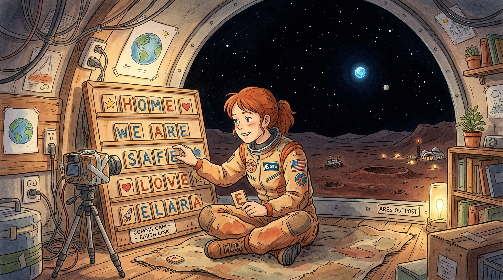
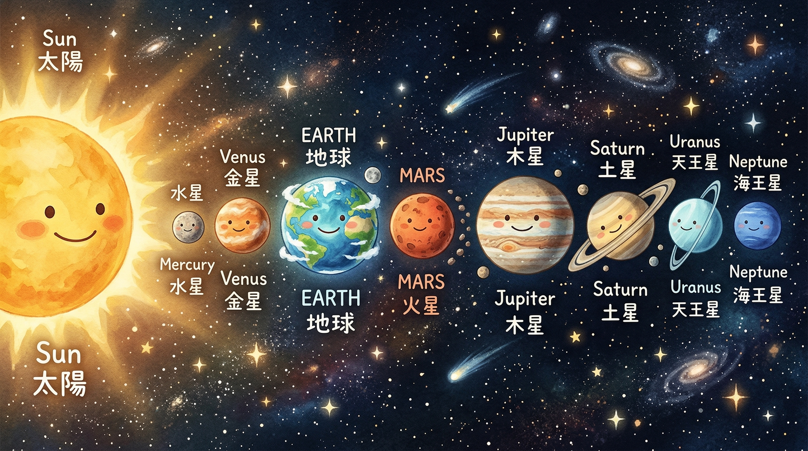

太阳系有 8 颗行星，像排排站一样绕着太阳转：
☀️ → 水星 → 金星 → 🌍地球 → 🔴火星 → 木星 → 土星 → 天王星 → 海王星
地球排第 3，火星排第 4 —— 我们是邻居！
但这个邻居超级远：最近时也有 5500 万公里！
口诀："水金地火木土天海" 🎵
光！💡 光每秒跑 30 万公里——
1 秒钟就能绕地球 7 圈半！🌍🌍🌍🌍🌍🌍🌍½
无线电信号和光一样快。
但火星太远了，就算光速也要好几分钟！